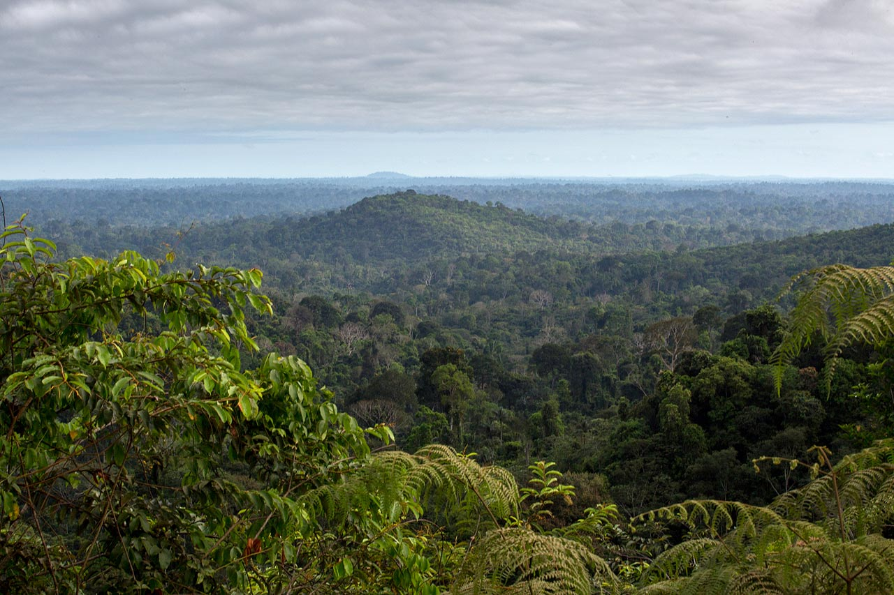

A natureza precisa de 50%
Floresta Nacional de Carajás, Pará, Brasil. Foto: Flavio Forner
“As áreas protegidas são a melhor ferramenta de conservação que temos em nossa caixa de ferramentas”, diz Mark Mulligan. Globalmente, mais de 16% das áreas terrestres estão agora – pelo menos nominalmente – protegidas. “Estamos bem no caminho para a meta de 17% de áreas protegidas em 2020”, complementa Mark.
Segundo o governo federal, atualmente, 52 milhões de hectares da área total da Amazônia se encontram protegidos na forma de 95 unidades de conservação de diferentes categorias. A meta oficial é chegar a 60 milhões de hectares nos próximos anos, o que representaria 15% de todo o bioma em sua porção brasileira. “Acontece que boa parte da floresta ainda em pé na região já não é intacta”, destaca Joice Ferreira, da Embrapa.
Existe também a pressão exercida sobre áreas protegidas por fatores como a pecuária extensiva, as monoculturas agrícolas, a extração ilegal de madeira e a urbanização. Segundo um levantamento do Greenpeace, entre 2007 e 2013, 30% das áreas afetadas pela degradação florestal estavam localizadas no interior de Terras Indígenas e outras unidades de conservação.
Uma análise do desmatamento em áreas protegidas ao longo dos últimos 13 anos mostra que, mantidas as taxas atuais de desflorestação, muitas delas serão desprovidas de floresta dentro de poucas décadas – provavelmente, as menores e mais próximas às atuais fronteiras agrícolas. “Se quisermos manter o clima estável, o acesso a fontes seguras de água potável, a mitigação das alterações climáticas e outros serviços ecossitêmicos, precisamos encontrar o equilíbrio entre paisagens que permitam o cultivo de alimentos de alta qualidade nutritiva e, ao mesmo tempo, a proteção da natureza”, declara Mark.
“Considerando a extensão de nossa dependência dos serviços prestados pelo meio ambiente, é provável a medida certa seja a de 50% da área terrestre sob proteção eficaz”, destaca o pesquisador. Essa idéia é promulgada por um movimento internacional chamado Nature needs half A Natureza precisa da metade ), apoiado por cientistas e cidadãos comuns ao redor do mundo. Onde criar parques nacionais? Onde erguer novos edificações? Quais critérios podem assegurar um futuro mais sustentável? Co$ting Natureza pode nos ajudar a encontrar tais soluções técnicas, mas o engajamento político e empresarial será fundamental para implementá-las.
Na Amazônia colombiana, a reconstrução de uma cidade arrasada por um deslizamento de terra parece ser o laboratório ideal de como o Co$ting Nature e outras ferramentas parecidas podem ser determinantes na construção de um novo mundo (clique aqui para conhecer a história de Gramalote, na Colômbia).